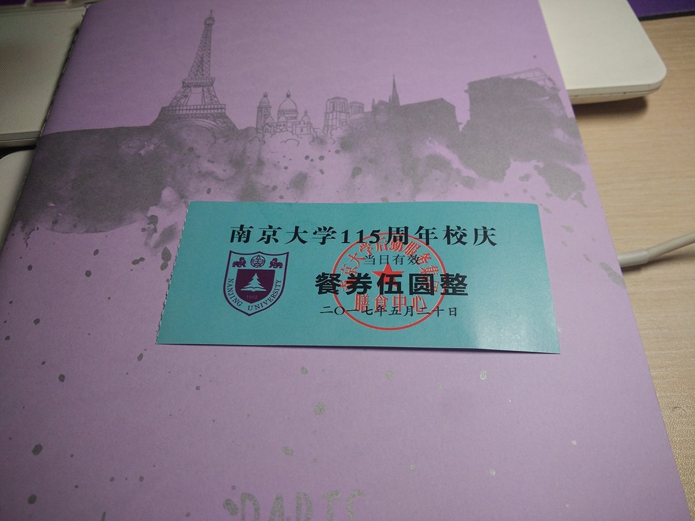
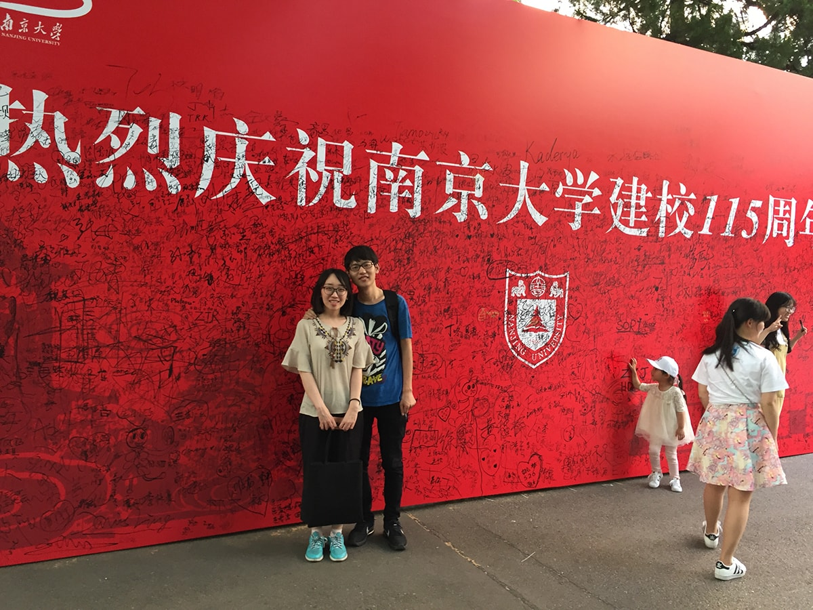
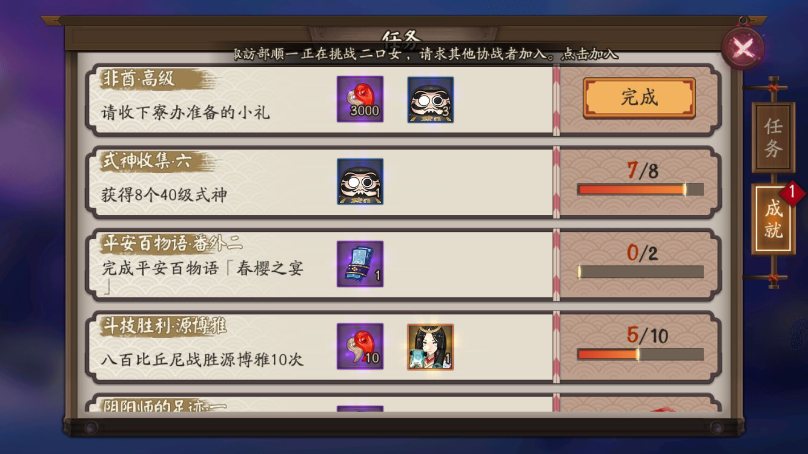
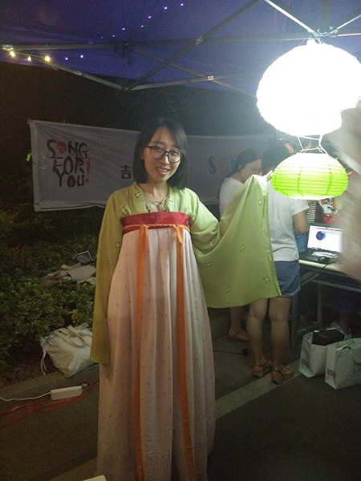
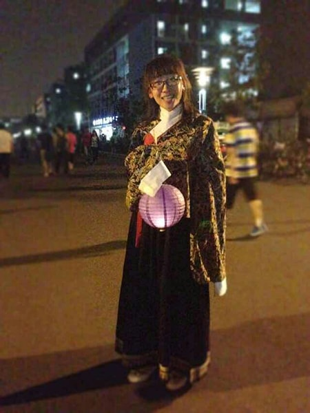
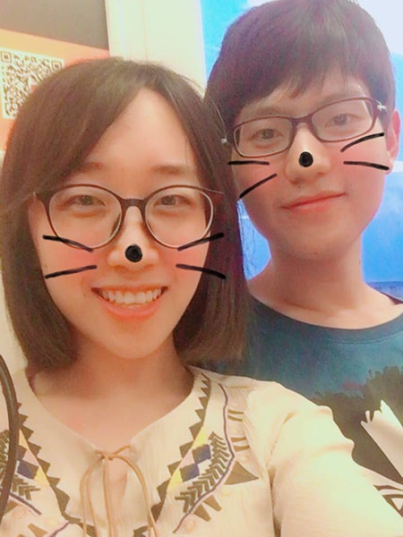

经过了几个月的时间，终于完成了大学的最后一项任务：毕业设计（包括毕业项目和毕业论文）。当然，答辩这天正好赶上校庆，赶上校园文化夜，赶上期待已久的阴阳师高级非酋成就。赶上一切的一切。这一天给我的惊喜太多，给我的纪念太多，这一天，应该是本科毕业前第一个有意义的一天（以后还有毕业典礼什么的啊！o(￣▽￣)ブ）必须把这么重要的一天记下来！【以下图片都是手机拍摄的！原谅我的渣画质！】
毕业答辩
之前还在想，这是大学最后一次“作业”了，而且并不是那么容易。没想到真投入进去的时候，好像并没有那么难。之前还听学长说论文有多难写，要修改很多遍。答辩时还有人不过，等着第二次答辩。但真正自己做起来，投入进去后，就不会有什么担心了，写完论文的时候，我还在想，我竟然不知不觉写了这么多字。为了防止学校查重不过，自己还花了钱提前查重！进到答辩现场的时候，说不紧张是肯定没人信的，好歹评审老师是那种比较逗逼的人（CZY & LJ），并没有给学生太大的压力。一下午竟然就这么快过去了！宣布通过名单的时候还是难以置信，自己就这样要毕业了呢，以至于后面我一直问思思姐，我真的过了么？可以毕业了么？其实只要自己认真做了，毕业还是很简单的。最重要的一点是！我忘记拍照留念了啊！还是当时太紧张了啊！(╯‵□′)╯︵┻━┻
校庆
520这天还是南大的校庆，每次校庆，学校都会发两张5元餐券，以前一直都是用一张留一张纪念，但是后来都找不到了呢！所以这次要拍照留念！哈哈哈哈！(●’◡’●)

答辩完出来的时候看到了热烈庆祝南京大学建校115周年的展板【其实去答辩的时候就看到了，但那个时候谁还有心思拍照呢？】不完美的是展板上写满了祝福的话或者名字啥的，虽然大家并无恶意，不过整个展板拍照后就感觉好乱╮(╯▽╰)╭

非酋高级成就
就在去仙林校区【我在鼓楼校区】参加校园文化夜的地铁上，思思姐帮我抽卡，庆祝下答辩完成。意料之内的没有SSR，但是发现拿到了期待已久的高级非酋成就！【抽卡400张没有SSR的成就】虽然这是非洲人的一种表现，但是我早就习惯了呢，而且我在意的是500连抽没有SSR的非洲阴阳师成就，会送一个稀有头像框——月见黑。这比抽到SSR的概率低的多啊。

校园文化夜
这是大学四年里第三次参加了，也是最后一次。大一大二就在仙林，每年都会参加，大三搬到鼓楼，有事耽搁了一次没去。文化夜还是老样子，社团、院系都有自己的展台，在宿舍区中间的路上。先去领盖章的一页纸，每去一个展台玩小游戏都会帮你盖章，然后去领奖品。由于答辩结束的比较晚，去到仙林都已经快8点了，首先当然是找软院的展台啊！我和思思姐正玩着呢，突然看到有人坐在电脑前，玩着小游戏。我就好奇的凑过去，这不是软院的传统，大一时候程序设计大赛做的小游戏么？赶紧上去试玩了一下，相比之下，真的比我当时做的好多了呢，长江后浪推前浪啊~接下来看到了漂亮的汉服社小姐姐，思思姐每次来都会试穿汉服让我拍照呢。

下面这张是从思思姐那要来的大一时候穿汉服的思思姐，因为那个时候还没在一起呢。【// 相比之下是不是胖了好多！つ﹏⊂】

后来又遇到了一个听歌识曲的游戏，我问他，有动漫方面的么？他先放了一首魔卡少女樱的主题曲，又放了一首四驱兄弟的主题曲，都被我猜到了，毕竟这都是童年呢！最后放了一首虹猫蓝兔七侠传，我竟然没听出来，看来要补番了！没逛几个展台，发现大家基本上都在收拾东西，差不多结束了，我和思思姐准备去换礼物了，然后……工作人员说礼物已经发完了。(╯‵□′)╯︵┻━┻
520
520这天怎么少得了秀恩爱呢！毕设一起做、一起答辩、一起去仙林参加校园文化夜，感谢思思姐一直的陪伴。以后也会是开开心心的每一天呢(^_^)

文章标题：520·答辩·校庆·校园文化夜·非酋高级成就
文章作者：cylong
文章链接：http://www.cylong.com/blog/2017/05/20/520/
有问题或者建议欢迎在下方评论。欢迎转载、引用，但希望标明出处，感激不尽(●’◡’●)